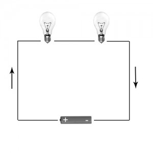
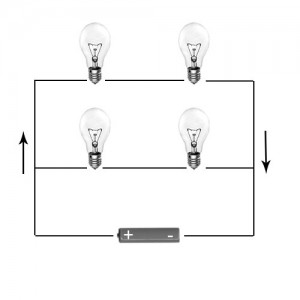

Definicion de circuitos electricos
¿QUÉ SON LOS CIRCUITOS ELECTRICOS?
𝚄𝚗 𝚌𝚒𝚛𝚌𝚞𝚒𝚝𝚘 𝚎𝚕é𝚌𝚝𝚛𝚒𝚌𝚘 𝚎𝚜 𝚎𝚕 𝚌𝚘𝚗𝚓𝚞𝚗𝚝𝚘 𝚍𝚎 𝚎𝚕𝚎𝚖𝚎𝚗𝚝𝚘𝚜 𝚎𝚕é𝚌𝚝𝚛𝚒𝚌𝚘𝚜 𝚌𝚘𝚗𝚎𝚌𝚝𝚊𝚍𝚘𝚜 𝚎𝚗𝚝𝚛𝚎 𝚜í 𝚚𝚞𝚎 𝚙𝚎𝚛𝚖𝚒𝚝𝚎𝚗 𝚐𝚎𝚗𝚎𝚛𝚊𝚛, 𝚝𝚛𝚊𝚗𝚜𝚙𝚘𝚛𝚝𝚊𝚛 𝚢 𝚞𝚝𝚒𝚕𝚒𝚣𝚊𝚛 𝚕𝚊 𝚎𝚗𝚎𝚛𝚐í𝚊 𝚎𝚕é𝚌𝚝𝚛𝚒𝚌𝚊 𝚌𝚘𝚗 𝚕𝚊 𝚏𝚒𝚗𝚊𝚕𝚒𝚍𝚊𝚍 𝚍𝚎 𝚝𝚛𝚊𝚗𝚜𝚏𝚘𝚛𝚖𝚊𝚛𝚕𝚊 𝚎𝚗 𝚘𝚝𝚛𝚘 𝚝𝚒𝚙𝚘 𝚍𝚎 𝚎𝚗𝚎𝚛𝚐í𝚊 𝚌𝚘𝚖𝚘, 𝚙𝚘𝚛 𝚎𝚓𝚎𝚖𝚙𝚕𝚘, 𝚎𝚗𝚎𝚛𝚐í𝚊 𝚌𝚊𝚕𝚘𝚛í𝚏𝚒𝚌𝚊 (𝚎𝚜𝚝𝚞𝚏𝚊), 𝚎𝚗𝚎𝚛𝚐í𝚊 𝚕𝚞𝚖í𝚗𝚒𝚌𝚊 (𝚋𝚘𝚖𝚋𝚒𝚕𝚕𝚊) 𝚘 𝚎𝚗𝚎𝚛𝚐í𝚊 𝚖𝚎𝚌á𝚗𝚒𝚌𝚊 (𝚖𝚘𝚝𝚘𝚛).
ＴＩＰＯＳ ＤＥ ＣＩＲＣＵＩＴＯＳ
- ᴄɪʀᴄᴜɪᴛᴏꜱ ᴇʟÉᴄᴛʀɪᴄᴏꜱ ᴇɴ ꜱᴇʀɪᴇ
- ᴄɪʀᴄᴜɪᴛᴏꜱ ᴇʟÉᴄᴛʀɪᴄᴏꜱ ᴇɴ ᴘᴀʀᴀʟᴇʟᴏ
- ᴄɪʀᴄᴜɪᴛᴏ ᴇʟÉᴄᴛʀɪᴄᴏ ᴍɪxᴛᴏ
ᴀ) ᴄɪʀᴄᴜɪᴛᴏꜱ ᴇʟÉᴄᴛʀɪᴄᴏꜱ ᴇɴ ꜱᴇʀɪᴇ.
𝚂𝚎 𝚌𝚘𝚗𝚘𝚌𝚎 𝚌𝚘𝚖𝚘 𝚌𝚒𝚛𝚌𝚞𝚒𝚝𝚘 𝚎𝚕é𝚌𝚝𝚛𝚒𝚌𝚘 𝚌𝚘𝚗𝚎𝚌𝚝𝚊𝚍𝚘 𝚎𝚗 𝚜𝚎𝚛𝚒𝚎 𝚊𝚚𝚞𝚎𝚕 𝚎𝚗 𝚎𝚕 𝚌𝚞𝚊𝚕 𝚕𝚘𝚜 𝚍𝚒𝚜𝚙𝚘𝚜𝚒𝚝𝚒𝚟𝚘𝚜 𝚎𝚜𝚝á𝚗 𝚌𝚘𝚗𝚎𝚌𝚝𝚊𝚍𝚘𝚜 𝚜𝚎𝚌𝚞𝚎𝚗𝚌𝚒𝚊𝚕𝚖𝚎𝚗𝚝𝚎, 𝚞𝚗𝚘 𝚊 𝚌𝚘𝚗𝚝𝚒𝚗𝚞𝚊𝚌𝚒ó𝚗 𝚍𝚎𝚕 𝚘𝚝𝚛𝚘. 𝙴𝚗 𝚕𝚊 𝚜𝚒𝚐𝚞𝚒𝚎𝚗𝚝𝚎 𝚒𝚖𝚊𝚐𝚎𝚗 𝚜𝚎 𝚖𝚞𝚎𝚜𝚝𝚛𝚊 𝚞𝚗 𝚎𝚓𝚎𝚖𝚙𝚕𝚘 𝚍𝚎 𝚞𝚗 𝚌𝚒𝚛𝚌𝚞𝚒𝚝𝚘 𝚌𝚘𝚗𝚎𝚌𝚝𝚊𝚍𝚘 𝚎𝚗 𝚜𝚎𝚛𝚒𝚎.

b) ᴄɪʀᴄᴜɪᴛᴏꜱ ᴇʟÉᴄᴛʀɪᴄᴏꜱ ᴇɴ ᴘᴀʀᴀʟᴇʟᴏ
𝚂𝚎 𝚌𝚘𝚗𝚘𝚌𝚎 𝚌𝚘𝚖𝚘 𝚌𝚒𝚛𝚌𝚞𝚒𝚝𝚘 𝚎𝚕é𝚌𝚝𝚛𝚒𝚌𝚘 𝚌𝚘𝚗𝚎𝚌𝚝𝚊𝚍𝚘 𝚎𝚗 𝚙𝚊𝚛𝚊𝚕𝚎𝚕𝚘 𝚍𝚘𝚗𝚍𝚎 𝚕𝚊 𝚊𝚕𝚒𝚖𝚎𝚗𝚝𝚊𝚌𝚒ó𝚗 𝚍𝚎 𝚕𝚘𝚜 𝚍𝚒𝚏𝚎𝚛𝚎𝚗𝚝𝚎𝚜 𝚍𝚒𝚜𝚙𝚘𝚜𝚒𝚝𝚒𝚟𝚘𝚜 𝚎𝚜 𝚕𝚊 𝚖𝚒𝚜𝚖𝚊 𝚙𝚊𝚛𝚊 𝚝𝚘𝚍𝚘𝚜, 𝚊𝚕 𝚒𝚐𝚞𝚊𝚕 𝚚𝚞𝚎 𝚕𝚊 𝚜𝚊𝚕𝚒𝚍𝚊 𝚍𝚎 𝚜𝚞𝚜 𝚝𝚎𝚛𝚖𝚒𝚗𝚊𝚕𝚎𝚜. 𝙴𝚗 𝚕𝚊 𝚜𝚒𝚐𝚞𝚒𝚎𝚗𝚝𝚎 𝚒𝚖𝚊𝚐𝚎𝚗 𝚜𝚎 𝚖𝚞𝚎𝚜𝚝𝚛𝚊 𝚞𝚗 𝚎𝚓𝚎𝚖𝚙𝚕𝚘 𝚍𝚎 𝚞𝚗 𝚌𝚒𝚛𝚌𝚞𝚒𝚝𝚘 𝚌𝚘𝚗𝚎𝚌𝚝𝚊𝚍𝚘 𝚎𝚗 𝚙𝚊𝚛𝚊𝚕𝚎𝚕𝚘.

c) ᴄɪʀᴄᴜɪᴛᴏ ᴇʟÉᴄᴛʀɪᴄᴏ ᴍɪxᴛᴏ
𝙻𝚘𝚜 𝚌𝚒𝚛𝚌𝚞𝚒𝚝𝚘𝚜 𝚎𝚕é𝚌𝚝𝚛𝚒𝚌𝚘𝚜 𝚖𝚒𝚡𝚝𝚘𝚜 𝚜𝚘𝚗 𝚕𝚘𝚜 𝚌𝚒𝚛𝚌𝚞𝚒𝚝𝚘𝚜 𝚎𝚕é𝚌𝚝𝚛𝚒𝚌𝚘𝚜 𝚍𝚘𝚗𝚍𝚎 𝚙𝚘𝚍𝚎𝚖𝚘𝚜 𝚎𝚗𝚌𝚘𝚗𝚝𝚛𝚊𝚛 𝚍𝚒𝚜𝚙𝚘𝚜𝚒𝚝𝚒𝚟𝚘𝚜 𝚌𝚘𝚗𝚎𝚌𝚝𝚊𝚍𝚘𝚜 𝚎𝚗 𝚜𝚎𝚛𝚒𝚎 𝚘 𝚎𝚗 𝚙𝚊𝚛𝚊𝚕𝚎𝚕𝚘. 𝙴𝚗 𝚕𝚊 𝚜𝚒𝚐𝚞𝚒𝚎𝚗𝚝𝚎 𝚒𝚖𝚊𝚐𝚎𝚗 𝚜𝚎 𝚖𝚞𝚎𝚜𝚝𝚛𝚊 𝚞𝚗 𝚎𝚓𝚎𝚖𝚙𝚕𝚘 𝚍𝚎 𝚞𝚗 𝚌𝚒𝚛𝚌𝚞𝚒𝚝𝚘 𝚎𝚕é𝚌𝚝𝚛𝚒𝚌𝚘 𝚖𝚒𝚡𝚝𝚘.

La intensidad que circula por el circuito no es la misma, ya que atraviesa caminos distintos.